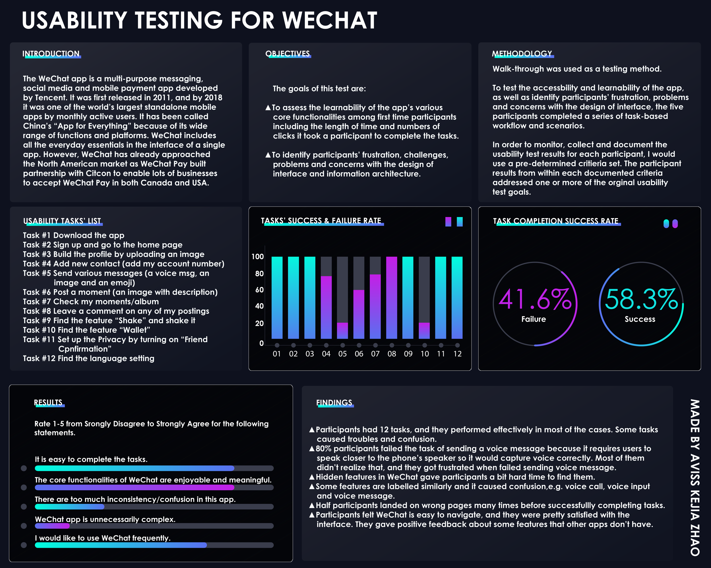
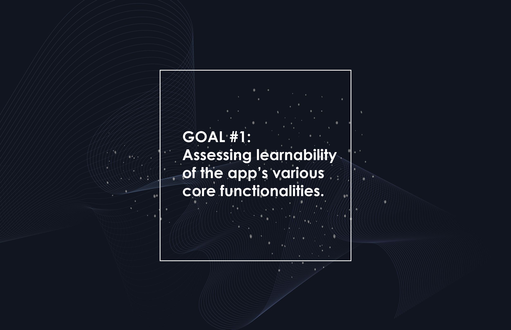
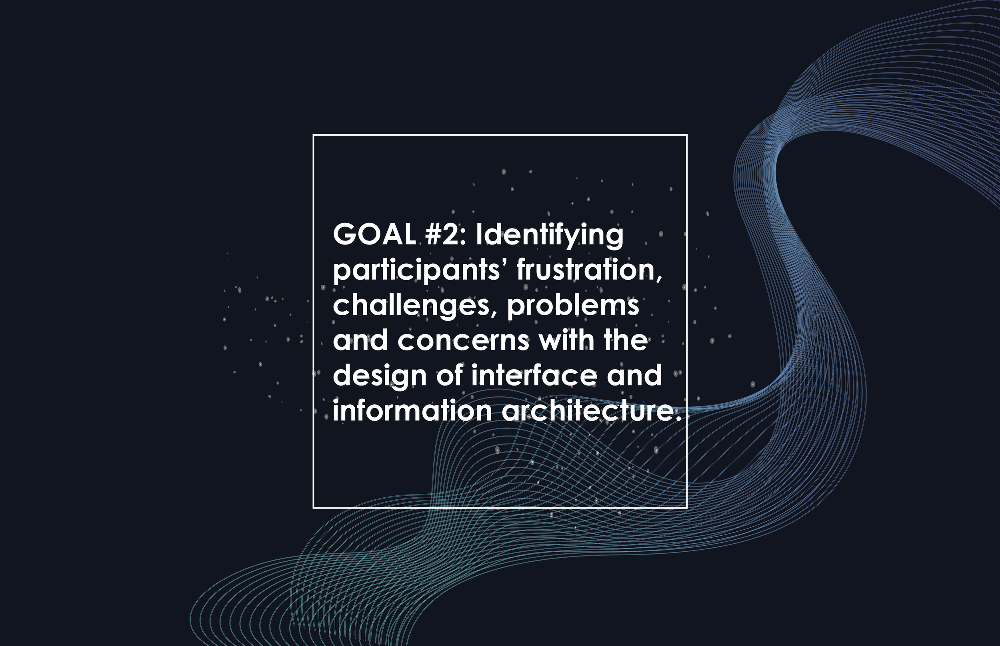
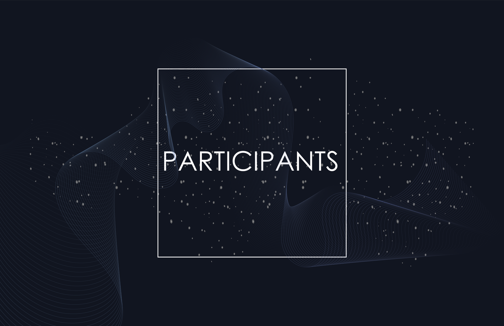
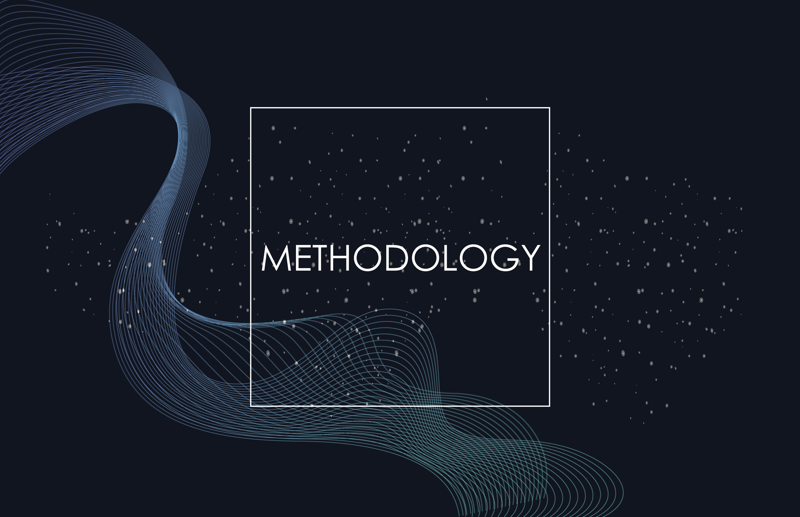
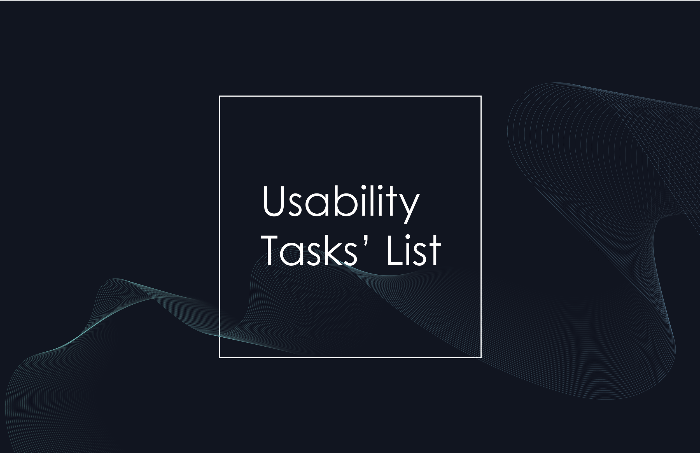
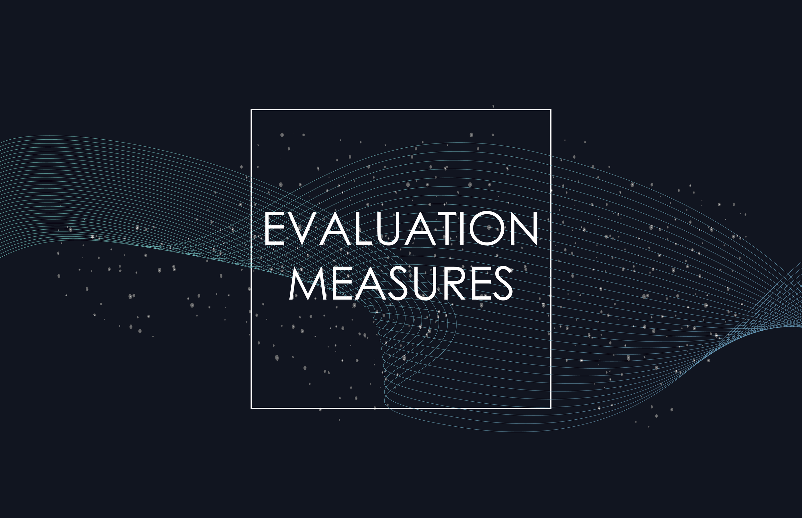
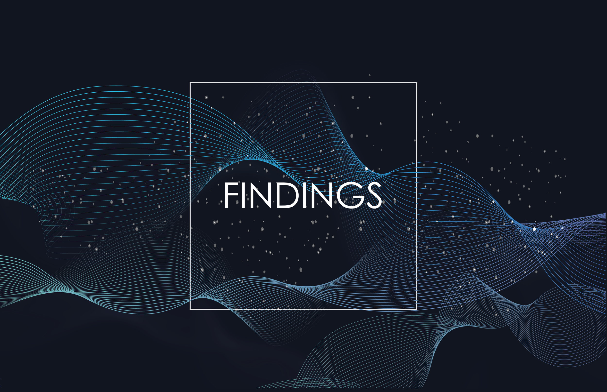

Usability Testing for WeChat
A full usability study of the WeChat mobile app for Canadian users — from test plan and participant recruitment to task analysis and final reporting.

Context
WeChat is a super-app developed by Tencent, combining messaging, social media, and mobile payment into a single platform. Widely known as China's "app for everything," it has begun expanding into the North American market — most notably through WeChat Pay's partnership with Citcon, enabling Canadian businesses to accept WeChat Pay.
As the app enters new markets, assessing its usability for Canadian users becomes essential. The purpose of this study was to conduct usability testing on the WeChat app in Canada and gather insights to improve its usability for this audience.
The study observed and recorded how well participants completed twelve predefined tasks within the app — measuring satisfaction, identifying frustrations, and surfacing design concerns alongside the app's strengths.
Goals

Goal 1 — Learnability
To assess the learnability of the app's core functionalities among first-time users, including the time taken and number of clicks required to complete each task.

Goal 2 — Frustration & Design Concerns
To identify participants' frustrations, challenges, and concerns with the app's interface design and information architecture.
The usability test included task performance assessments, post-task questionnaires, and one-on-one post-test interviews. Findings were analyzed to recommend improvements that better align WeChat with the needs and expectations of Canadian users.
Research Questions
- How easily do participants understand what the app is?
- How easily do participants register for the app?
- How easily do participants start to explore the core functionalities?
- How well do participants understand the symbols and icons?
- Is there an appropriate balance of ease of use and ease of learning?
Participants

Five participants were recruited — all with zero or minimal prior experience using WeChat, and all intermediate to advanced mobile technology users. Participants were primarily classmates or coworkers.
Recruiting criteria were based on familiarity with the app, mobile technology experience, and general comfort with smartphones. All participants owned a smartphone (iPhone or Android) and knew how to download apps.
By recruiting participants with a range of mobile technology experience, the study was able to better understand varying user needs, expectations, and motivations — and determine whether the app's design is functional, meaningful, and enjoyable.
Procedure

Tests were conducted at various locations based on participant availability. Participants used their own smartphones to complete the tasks, keeping the experience as natural as possible. I sat beside each participant, providing instructions and acting as both moderator and note-taker — observing and recording behaviours throughout.
All sessions were video recorded. Before the test began, participants signed a consent form and received a brief overview of the app and the testing process. Tasks were read aloud one at a time. At the end of each task, participants completed a short questionnaire. After all tasks were completed, a one-on-one interview was conducted.
Data Collection
As note-taker and moderator, I documented participant responses, comments, and observed behaviours throughout each session. A task list was provided as a reference, and the percentage of tasks completed successfully was calculated for each participant.
A rubric was used to measure basic usability metrics against the app's existing build. This ensured consistent data collection across all five sessions.
Task List

Participants completed twelve tasks designed to test the app's accessibility and learnability, as well as to identify friction points in the interface and information architecture.
-
Task 1 — Download the app
Find the app in the app store and successfully download it.
-
Task 2 — Sign up
Open the app, tap sign up, and complete both steps to create a new account.
-
Task 3 — Get to the home page
Sign in and navigate to the home page.
-
Task 4 — Build the profile
Find "My Profile," upload an image, and complete the profile fields.
-
Task 5 — Add a new contact
Find "Add Contacts" and add the provided WeChat number.
-
Task 6 — Send various messages
Send a voice message, an image, and an emoji to the added contact.
-
Task 7 — Post a Moment
Navigate to Moments, upload an image with a short description, and post it.
-
Task 8 — View a contact's album
Find the newly added contact, navigate to their profile, and open their Album.
-
Task 9 — Leave a comment
Browse the contact's Moments and leave a comment on any post.
-
Task 10 — Find "Message in a Bottle"
Locate the hidden feature, pick up a bottle, and throw it back or reply.
-
Task 11 — Set up Privacy
Navigate to account settings, find Privacy, and turn on Friend Confirmation.
-
Task 12 — Find the Language setting
Navigate to General settings and locate the Language option.
Post-Test Questionnaire & Interview

After completing all tasks, participants filled out a mixed questionnaire — combining multiple choice and open-ended questions — to share their overall experience and rate their satisfaction with the app. This gave participants a structured opportunity to reflect on whether the app felt functional, meaningful, and useful.
A one-on-one interview followed, allowing for a more open conversation about each participant's experience and impressions of WeChat. Completion time for each of the twelve tasks was also recorded to measure task speed, identify errors, and pinpoint areas of frustration.
Reporting Results

At the conclusion of testing, a final report and poster were developed summarizing all findings, an evaluation against the original usability goals, and recommendations for future improvements.
- Participants completed most of the 12 tasks effectively, though several caused notable confusion.
- 80% of participants failed the voice message task — they were unaware that the phone needed to be held closer to the speaker to capture audio, leading to repeated failures and frustration.
- Hidden features were difficult to discover, creating friction for first-time users.
- Similarly labelled functions — such as voice call, voice input, and voice message — caused confusion due to overlapping terminology.
- Half of the participants landed on incorrect pages multiple times before successfully completing tasks.
- Despite these issues, participants found WeChat easy to navigate overall and gave positive feedback — particularly about features not found in comparable apps.
Outcomes
This project provided hands-on experience conducting a full usability study from start to finish — developing a test plan, recruiting participants, moderating sessions, collecting data, and synthesizing findings into actionable recommendations.
The process deepened my understanding of how real users interact with complex, feature-rich apps, and how small design decisions — labelling, discoverability, and information architecture — can significantly impact the user experience. Observing participants struggle with hidden features and similarly named functions reinforced the importance of clarity and consistency in interface design.
Most importantly, this study demonstrated that usability testing is not just about finding problems — it's about understanding the gap between what designers intend and what users actually experience.